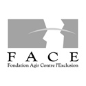
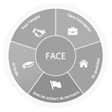
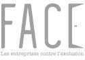

Histoire de Face
Tout est parti d’un constat simple : « L’exclusion permanente d’une partie de nos concitoyens est inacceptable ! Entreprises et pouvoirs publics doivent conjointement développer l’innovation sociale pour relever ce défi ».
Forte de sa mission d’utilité publique, FACE lutte contre toutes les formes d’exclusion, de discriminations et de pauvreté. FACE défend – depuis 1993, date de sa création – les valeurs de solidarité, de cohésion sociale, d’égalité des chances et de traitement.
Ses missions sont de favoriser la mise en action individuelle et collective de la responsabilité sociale/sociétale des entreprises (RSE) ; de mobiliser et coordonner les volontés et initiatives d’engagement social et sociétal des entreprises dans leur territoire ; de développer l’innovation sociale et sociétale avec et pour les entreprises ; d’affirmer la place et le discours des entreprises socialement responsables.Chronologie

Martine Aubry réunit 13 chefs d’entreprises françaises et les convainc de financer la création d’une fondation pour agir contre l’exclusion : FACE. L’objectif est de mobiliser des entreprises sur les territoires afin de faciliter l’insertion par l’emploi, de favoriser l’innovation sociale et d’apporter un soutien actif à des initiatives locales de lutte contre les exclusions.

1994FACE se donne dès le départ pour objectifs de prévenir et lutter contre toutes les formes d’exclusion, de discrimination et de pauvreté : emploi, éducation, consommation, santé, logement, numérique, citoyenneté…Des actions de proximité sont menées au bénéfice des territoires et des habitants. Elle est Reconnue d’Utilité Publique le 20 février 1994.

Antoine Guichard, patron du Groupe Casino, prend la présidence de la Fondation à la suite de Martine Aubry.

Manpower rejoint la Fondation, ce qui porte le nombre d’Entreprise Fondatrices à 14.
Gérard Mestrallet, PDG d’Engie (ex GDF SUEZ), devient Président de FACE. La même année, AG2R La Mondiale rejoint la Fondation, ce porte le nombre de Membres fondateurs à 15.

2010FACE redéfinit ses 5 axes d’intervention: Dans l’entreprise, Pour l’emploi, A l’école, Au quotidien et Avec les acteurs du territoires. Au sein de chacun de ces champs, projets nationaux et actions locales sont développées par FACE, avec la participation active des entreprises membres et de leurs salarié-e-s. Cette dynamique affirme la Fondation comme « un grand mouvement social des entreprises ».

Cinquantième fondation abritante par décret paru au Journal Officiel le 21 décembre 2013, la Fondation offre une nouvelle alternative aux entreprises qui souhaitent accentuer leurs démarches sociales et sociétales sur des champs cohérents et compatibles avec l’objet de FACE : la lutte contre toutes formes d’exclusion, de discrimination ou de pauvreté.

2015FACE change d’identité visuelle et affirme son positionnement : « Les entreprises contre l’exclusion ». La redéfinition de ses champs d’action lui permet d’exposer clairement son approche globale et innovante de la RSE : Emploi, Entreprise, Education, Consommation et Territoires. FACE agit avec, par mais aussi pour l’entreprise.